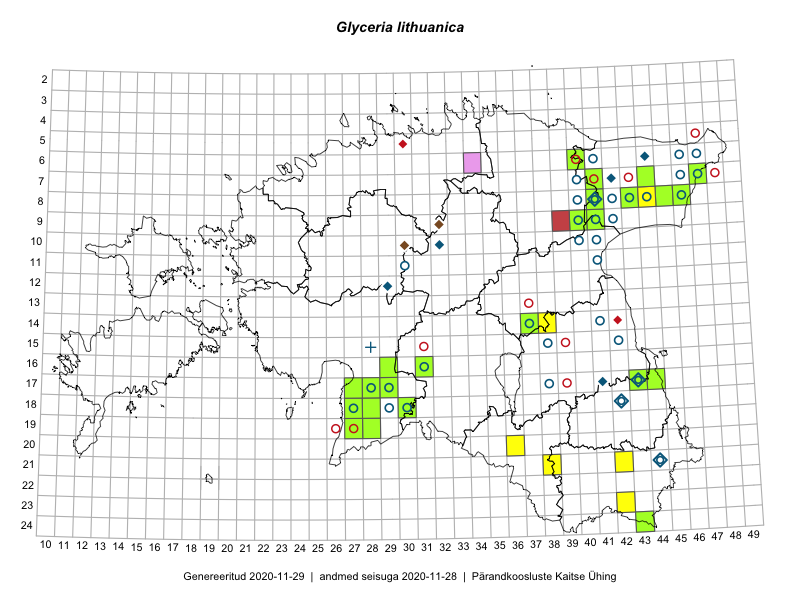

Glyceria lithuanica — kahar parthein
Kaardile koondatud taksonid: Glyceria lithuanica (Gorski) Gorski (90)

Kaart põhineb 90 kirjel, neist:
vaatlusi 43
eksemplare 47
Kaasaegsed1 leiukohad asuvad 26 ruudus.
Andmed “Eesti taimede levikuatlasest”,2 sulgudes ruutude arv:3
● 1971–2005 (10)
○ 1921–1970 (40)
△ kuni 1920 (1)
+ hävinud (0)
? kaheldav (0)
Lisaruudud teistest andmebaasidest:4
ELF: 2006– . . . (1)
PKÜ: 2006– . . . (1)
ELF: 1971–2005 (0)
PKÜ: 1997–2005 (1)
| Ruut | Vaatleja(d) | Vaatlusaeg | Kirje PlutoFis |
|---|---|---|---|
| 08-43 | Thea Kull, Eerik Leibak | 2015-07-24 | ruut/ala: Glyceria lithuanica (Gorski) Gorski |
| 08-46 | Thea Kull, Eerik Leibak | 2015-07-23 | ruut/ala: Glyceria lithuanica (Gorski) Gorski |
| 07-41 | Thea Kull, Eerik Leibak | 2015-09-10 | ruut/ala: Glyceria lithuanica (Gorski) Gorski |
| 14-37 | Meeli Mesipuu, Helen Toom | 2017-08-14 | ruut/ala: Glyceria lithuanica (Gorski) Gorski |
| 10-32 | Katrit Karus, Tõnu Feldmann | 2017-07-05 | ruut/ala: Glyceria lithuanica (Gorski) Gorski |
| 18-28 | Indrek Tammekänd, Raivo Endrekson | 2015-07-21 | ruut/ala: Glyceria lithuanica (Gorski) Gorski |
| 08-45 | Peedu Saar, Liina Oja | 2015-07-22 | punkt: Glyceria lithuanica (Gorski) Gorski |
| 08-46 | Thea Kull, Eerik Leibak | 2015-07-23 | punkt: Glyceria lithuanica (Gorski) Gorski |
| 08-43 | Thea Kull, Eerik Leibak | 2015-07-24 | punkt: Glyceria lithuanica (Gorski) Gorski |
| 18-30 | Indrek Tammekänd | 2016-08-05 | punkt: Glyceria lithuanica (Gorski) Gorski |
| 19-27 | Indrek Tammekänd | 2016-08-02 | punkt: Glyceria lithuanica (Gorski) Gorski |
| 19-28 | Indrek Tammekänd | 2016-07-27 | punkt: Glyceria lithuanica (Gorski) Gorski |
| 08-44 | Indrek Tammekänd, Renno Nellis | 2015-10-16 | punkt: Glyceria lithuanica (Gorski) Gorski |
| 14-37 | Meeli Mesipuu, Thea Kull | 2017-06-19 | punkt: Glyceria lithuanica (Gorski) Gorski |
| 05-43 | Katrit Karus, Tõnu Feldmann | 2017-08-09 | ruut/ala: Glyceria lithuanica (Gorski) Gorski |
| 14-37 | Meeli Mesipuu, Thea Kull | 2017-06-19 | punkt: Glyceria lithuanica (Gorski) Gorski |
| 14-37 | Meeli Mesipuu | 2017-06-19 | punkt: Glyceria lithuanica (Gorski) Gorski |
| 14-37 | Meeli Mesipuu | 2017-06-19 | punkt: Glyceria lithuanica (Gorski) Gorski |
| 14-37 | Meeli Mesipuu | 2017-06-19 | punkt: Glyceria lithuanica (Gorski) Gorski |
| 14-37 | Thea Kull, Meeli Mesipuu | 2017-06-19 | punkt: Glyceria lithuanica (Gorski) Gorski |
| 14-37 | Meeli Mesipuu | 2017-06-19 | punkt: Glyceria lithuanica (Gorski) Gorski |
| 14-37 | Meeli Mesipuu, Thea Kull | 2017-06-19 | punkt: Glyceria lithuanica (Gorski) Gorski |
| 14-37 | Meeli Mesipuu, Thea Kull | 2017-06-19 | punkt: Glyceria lithuanica (Gorski) Gorski |
| 14-37 | Meeli Mesipuu, Thea Kull | 2017-06-19 | punkt: Glyceria lithuanica (Gorski) Gorski |
| 14-37 | Thea Kull | 2017-06-19 | punkt: Glyceria lithuanica (Gorski) Gorski |
| 14-37 | Meeli Mesipuu, Helen Toom | 2017-08-14 | punkt: Glyceria lithuanica (Gorski) Gorski |
| 14-37 | Meeli Mesipuu, Helen Toom | 2017-08-14 | punkt: Glyceria lithuanica (Gorski) Gorski |
| 14-37 | Meeli Mesipuu, Helen Toom | 2017-08-14 | punkt: Glyceria lithuanica (Gorski) Gorski |
| 14-37 | Meeli Mesipuu, Helen Toom | 2017-08-14 | punkt: Glyceria lithuanica (Gorski) Gorski |
| 14-37 | Meeli Mesipuu, Helen Toom | 2017-08-14 | punkt: Glyceria lithuanica (Gorski) Gorski |
| 14-37 | Meeli Mesipuu, Helen Toom | 2017-08-14 | punkt: Glyceria lithuanica (Gorski) Gorski |
| 14-37 | Meeli Mesipuu, Helen Toom | 2017-08-14 | punkt: Glyceria lithuanica (Gorski) Gorski |
| 14-37 | Meeli Mesipuu, Helen Toom | 2017-08-14 | punkt: Glyceria lithuanica (Gorski) Gorski |
| 14-37 | Meeli Mesipuu, Helen Toom | 2017-08-14 | punkt: Glyceria lithuanica (Gorski) Gorski |
| 14-37 | Meeli Mesipuu, Helen Toom | 2017-08-14 | punkt: Glyceria lithuanica (Gorski) Gorski |
| 14-37 | Meeli Mesipuu, Helen Toom | 2017-08-14 | punkt: Glyceria lithuanica (Gorski) Gorski |
| 14-37 | Meeli Mesipuu, Helen Toom | 2017-08-14 | punkt: Glyceria lithuanica (Gorski) Gorski |
| 14-37 | Meeli Mesipuu, Helen Toom | 2017-08-14 | punkt: Glyceria lithuanica (Gorski) Gorski |
| 14-37 | Meeli Mesipuu, Helen Toom | 2017-08-14 | punkt: Glyceria lithuanica (Gorski) Gorski |
| 14-37 | Meeli Mesipuu, Helen Toom | 2017-08-14 | punkt: Glyceria lithuanica (Gorski) Gorski |
| 14-37 | Meeli Mesipuu, Helen Toom | 2017-08-14 | punkt: Glyceria lithuanica (Gorski) Gorski |
| 14-37 | Meeli Mesipuu, Helen Toom | 2017-08-14 | punkt: Glyceria lithuanica (Gorski) Gorski |
| 14-37 | Meeli Mesipuu, Helen Toom | 2017-08-14 | punkt: Glyceria lithuanica (Gorski) Gorski |
| 08-46 | Toomas Kukk | 2007-06-20 | TAA0104249: Glyceria lithuanica (Gorski) Gorski |
| 07-41 | Toomas Kukk | 2006-08-31 | TAA0104283: Glyceria lithuanica (Gorski) Gorski |
| 07-41 | Toomas Kukk | 2006-08-31 | TAA0104284: Glyceria lithuanica (Gorski) Gorski |
| 08-45 | Peedu Saar, Liina Oja | 2015-07-22 | TAA0116396: Glyceria lithuanica (Gorski) Gorski |
| 07-44 | Toomas Kukk, Tiit Hallikma | 2015-07-20 | TAA0134261: Glyceria lithuanica (Gorski) Gorski |
| 07-44 | Toomas Kukk, Tiit Hallikma | 2015-07-20 | TAA0134262: Glyceria lithuanica (Gorski) Gorski |
| 08-41 | Peedu Saar, Timo Luhamäe | 2016-07-29 | TAA0134687: Glyceria lithuanica (Gorski) Gorski |
| 08-41 | Peedu Saar, Timo Luhamäe | 2016-07-29 | TAA0134688: Glyceria lithuanica (Gorski) Gorski |
| 08-46 | Thea Kull, Eerik Leibak | 2015-07-23 | TAA0113786: Glyceria lithuanica (Gorski) Gorski |
| 06-40 | Thea Kull | 2014-07-11 | TAA0113797: Glyceria lithuanica (Gorski) Gorski |
| 07-47 | Thea Kull, Peedu Saar | 2014-07-24 | TAA0113870: Glyceria lithuanica (Gorski) Gorski |
| 07-47 | Thea Kull, Peedu Saar | 2014-07-24 | TAA0113871: Glyceria lithuanica (Gorski) Gorski |
| 17-43 | Anneli Palo | 2016-07-01 | TAA0136328: Glyceria lithuanica (Gorski) Gorski |
| 17-29 | Indrek Tammekänd | 2015-09-05 | TAA0136199: Glyceria lithuanica (Gorski) Gorski |
| 17-29 | Indrek Tammekänd | 2015-09-05 | TAA0136200: Glyceria lithuanica (Gorski) Gorski |
| 19-28 | Indrek Tammekänd | 2015-07-05 | TAA0136204: Glyceria lithuanica (Gorski) Gorski |
| 19-28 | Indrek Tammekänd | 2015-07-05 | TAA0136205: Glyceria lithuanica (Gorski) Gorski |
| 19-27 | Indrek Tammekänd | 2015-10-10 | TAA0136206: Glyceria lithuanica (Gorski) Gorski |
| 17-28 | Indrek Tammekänd | 2015-08-24 | TAA0136207: Glyceria lithuanica (Gorski) Gorski |
| 18-28 | Indrek Tammekänd | 2015-08-12 | TAA0136208: Glyceria lithuanica (Gorski) Gorski |
| 18-28 | Indrek Tammekänd | 2015-08-12 | TAA0136209: Glyceria lithuanica (Gorski) Gorski |
| 16-29 | Indrek Tammekänd | 2015-07-31 | TAA0136210: Glyceria lithuanica (Gorski) Gorski |
| 17-27 | Indrek Tammekänd | 2015-07-19 | TAA0136211: Glyceria lithuanica (Gorski) Gorski |
| 18-27 | Indrek Tammekänd | 2015-09-10 | TAA0136212: Glyceria lithuanica (Gorski) Gorski |
| 08-43 | Toomas Kukk | 2014-07-09 | TAA0112901: Glyceria lithuanica (Gorski) Gorski |
| 08-43 | Toomas Kukk | 2014-07-09 | TAA0112902: Glyceria lithuanica (Gorski) Gorski |
| 07-41 | Thea Kull, Eerik Leibak | 2014-09-10 | TAA0113251: Glyceria lithuanica (Gorski) Gorski |
| 08-45 | Indrek Tammekänd, Renno Nellis | 2016-10-23 | TAA0139745: Glyceria lithuanica (Gorski) Gorski |
| 18-30 | Indrek Tammekänd | 2016-08-05 | TAA0139996: Glyceria lithuanica (Gorski) Gorski |
| 18-30 | Indrek Tammekänd | 2016-08-05 | TAA0139995: Glyceria lithuanica (Gorski) Gorski |
| 08-41 | Timo Luhamäe, Peedu Saar | 2016-07-29 | TAA0142147: Glyceria lithuanica (Gorski) Gorski |
| 08-41 | Timo Luhamäe, Peedu Saar | 2016-07-29 | TAA0142148: Glyceria lithuanica (Gorski) Gorski |
| 14-37 | Meeli Mesipuu | 2017-06-19 | TAA0145093: Glyceria lithuanica (Gorski) Gorski |
| 14-37 | Meeli Mesipuu, Thea Kull | 2017-06-19 | TAA0145096: Glyceria lithuanica (Gorski) Gorski |
| 14-37 | Meeli Mesipuu, Thea Kull | 2017-06-19 | TAA0145097: Glyceria lithuanica (Gorski) Gorski |
| 14-37 | Meeli Mesipuu, Helen Toom | 2017-08-14 | TAA0145135: Glyceria lithuanica (Gorski) Gorski |
| 14-37 | Meeli Mesipuu, Helen Toom | 2017-08-14 | TAA0145136: Glyceria lithuanica (Gorski) Gorski |
| 09-41 | Ott Luuk, Eerik Leibak | 2016-08-05 | TAA0145577: Glyceria lithuanica (Gorski) Gorski |
| 07-47 | Katrin Jürgens | 2018-07-19 | TAA0146161: Glyceria lithuanica (Gorski) Gorski |
| 07-47 | Katrin Jürgens | 2018-07-19 | TAA0146162: Glyceria lithuanica (Gorski) Gorski |
| 09-40 | Ott Luuk, Eerik Leibak | 2016-08-09 | TAA0145595: Glyceria lithuanica (Gorski) Gorski |
| 14-37 | Meeli Mesipuu, Thea Kull | 2017-06-19 | TAA0145098: Glyceria lithuanica (Gorski) Gorski |
| 18-28 | Indrek Tammekänd | 2018-08-25 | TAA0147662: Glyceria lithuanica (Gorski) Gorski |
| 16-31 | Indrek Tammekänd | 2018-06-04 | TAA0147685: Glyceria lithuanica (Gorski) Gorski |
| 16-31 | Indrek Tammekänd | 2018-06-04 | TAA0147686: Glyceria lithuanica (Gorski) Gorski |
| 16-31 | Indrek Tammekänd | 2018-06-04 | TAA0147687: Glyceria lithuanica (Gorski) Gorski |
| 17-44 | Indrek Tammekänd, Liis Kuresoo, Teele Paluots | 2019-06-17 | TAA0151747: Glyceria lithuanica (Gorski) Gorski |
Kaasaegsed leiukohad (tähistatud värvitud ruutudega) põhinevad peamiselt 2014–2019 välitööandmetel. Väiksemal määral on andmebaasi kantud vanemaid leiuandmeid aastatest 2006–2013.↩︎
Kukk, T., Kull, T., Eesti taimede levikuatlas. Eesti Maaülikool, Põllumajandus- ja Keskkonnainstituut, Tartu, 2005.↩︎
NB! 2005. aasta atlase andmestikus katavad uuemad leiud vanemaid. Näiteks kui liik on ruudus registreeritud 1971–2005, siis pole võimalik öelda, kas ta oli sellest ruudust teada ka enne 1970. aastat. Vana atlase andmetel hävinud ja kaheldavaid leiukohti pole hilisemate (taas)leidude põhjal korrigeeritud.↩︎
Eestimaa Looduse Fondi (ELF) ja Pärandkoosluste Kaitse Ühingu (PKÜ) andmebaasid sisaldavad inventeeritud koosluste kirjeldusi ja liigiloendeid. Neist andmekogudest on kaardile lisatud lisatud vaid need ruudud, millest uue atlase andmekogus taksoni kohta kirjeid veel pole. Kõrvale on jäetud teadaolevalt kaheldavad määrangud. Kaartidel katavad uuema perioodi andmed vanemaid, PKÜ omad ELFi omi. Kattumise tõttu võib kaardil näha olla vähem mingi kategooria ruute kui legendis olev arv näitab. ELFi ja PKÜ andmed ei kajastu hetkel vaatluste tabelis ega ruutude liigiloendites.↩︎